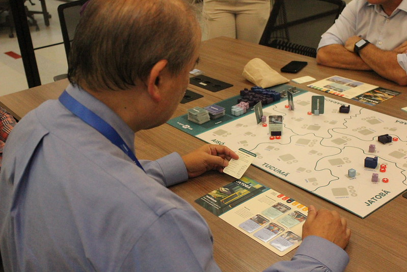

Desenhei a mecânica cooperativa e a narrativa do jogo, traduzindo desafios reais de gestão do SUS — telessaúde, alocação de recursos entre municípios e atenção em rede — em decisões jogáveis, e prototipei fisicamente mais de 200 componentes até a versão final testada em mesa.
O jogo foi selecionado para a DOFF 2024, a maior feira de jogos de tabuleiro da América Latina.